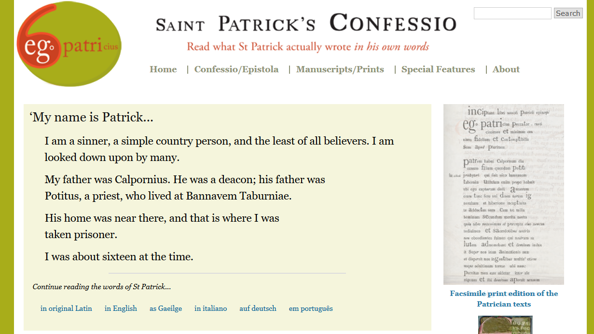
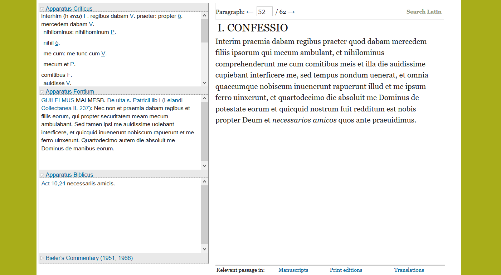
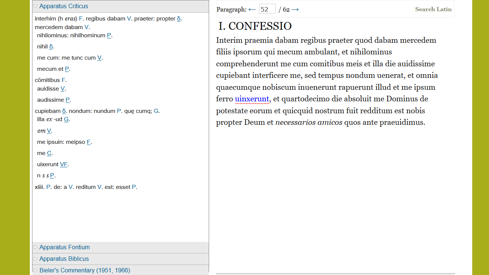
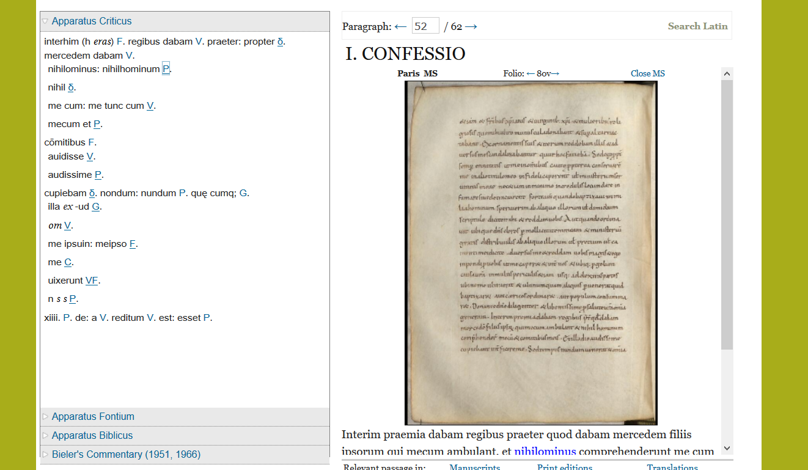
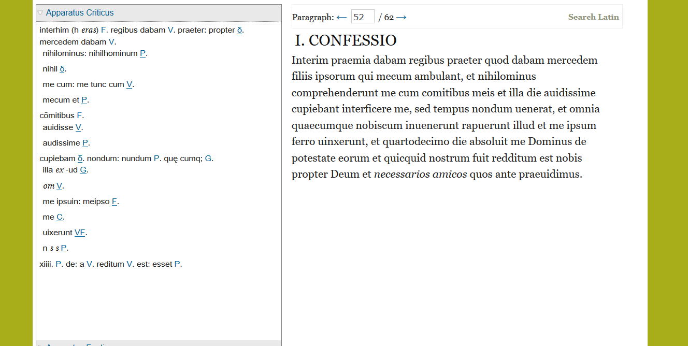
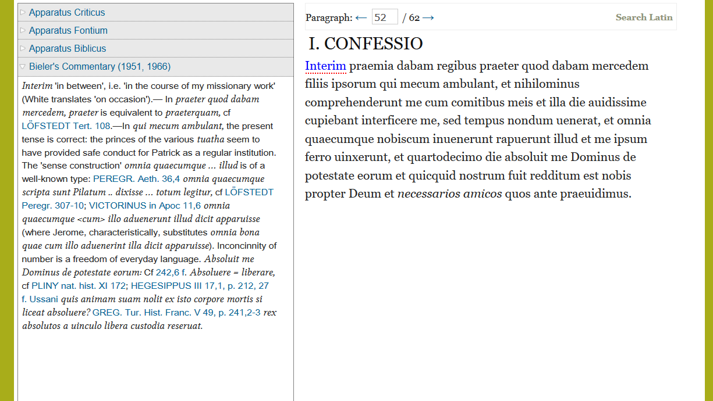
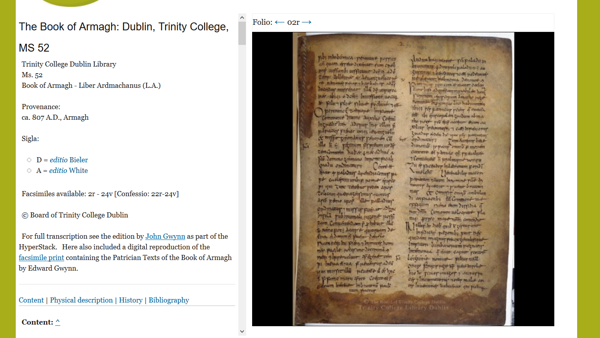
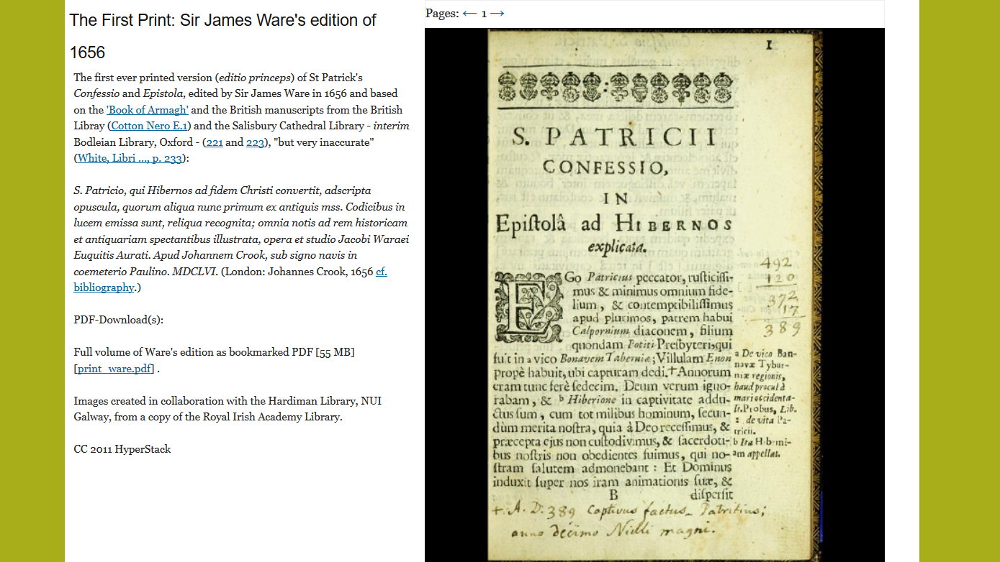

A Review of confessio.ie, or Practical Thoughts on Digital Editing in Classics
Table of Contents
Abstract
The Hypertext Stack Project (confessio.ie), which digitizes Bieler’s 1950/51 print edition of Patrick of Ireland’s letters, is one of few critical digital editions in classical scholarship. Hence, besides supplying much supporting material such as translations or images of manuscripts, it aims to serve as a model for digitally editing (late) ancient texts. Confessio.ie succeeds at showing that TEI can be applied to classical texts as well, which has been doubted, and paves the way for a more hypertextual understanding of a textual tradition. The project has worked out a by and large suitable layout for a digital edition of a text with a medieval manuscript tradition. However, future editors will need to give deeper thought to matters such as accurately encoding and presenting an apparatus criticus and improving the user friendliness of the interface. Further, because of inaccuracies in the digital apparatus users will want to exploit confessio.ie’s rich resources not instead of, but only next to Bieler’s print edition.
Introduction
Patrick of Ireland, who in the fifth century evangelized the Irish, in modern-day popular culture arguably counts among the most well-known, certainly among the most influential Christian saints. About his life and deeds legends circulate, many of which find their origin in a seventh-century Life of Patrick written by the Irish monk, Muirchú. Two Latin texts have come down to us from Late Antiquity that can undoubtedly be attributed to Patrick himself: the so-called Confessio and the Epistola. Both of them are written in epistolary form and are united in the tradition as the first and second books, respectively, of the Libri Epistolarum Sancti Patricii Episcopi. These letters have been edited in one of the few editions of ancient texts that come close to being definitive, by Ludwig Bieler (Bieler 1950; Bieler 1951).1
The project under review here, called ‘Saint Patrick’s Confessio Hypertext Stack Project’ (in short: confessio.ie, or ‘HyperStack’), aims at enabling everyone, not least those not to form part of the scholarly community, to “read what St Patrick actually wrote in his own words” (italics original). It is Bieler’s edition which is at its core. Both Bieler’s work and confessio.ie are related to the same larger project, the Dictionary of Medieval Latin from Celtic Sources (DMLCS)2 of the Royal Irish Academy: Bieler’s reprint of 1993 has been published as Ancillary Publications IV of the DMLCS.
Confessio.ie came into being as an initiative by the DMLCS and its editor, Anthony Harvey, who acted as the principal investigator. Most of the work has been carried out by the post-doctoral researcher, Franz Fischer, between 2008 and 2011. They have been supported by a number of short- to mid-term-interns. For the technical realization, the project relied on the Digital Humanities Observatory of the Royal Irish Academy.3 The Royal Irish Academy has funded the project and is now responsible for its curation and long-term sustainment. As the ongoing DMLCS project has been put in charge of that, the long-term availability of confessio.ie is reasonably safe. However, there is no guidance how to cite the digital edition.
Confessio.ie was launched already in September 2011.4 There are a number of reasons why it still appears worthwhile to review this resource after almost a decade has passed. First, confessio.ie is to date the most comprehensive venture to produce a digital critical edition within classical philology, and one of only a handful of by and large successful editions in this field.5 Confessio.ie may thus be approached as a model by anyone who considers producing a digital scholarly edition of a classical text. Second, it stands out among digital scholarly editions due to its outreach focus. Third, within Classics and apart from discussions of digital editions as such (e.g., Monella 2018, 143), confessio.ie still tends to be largely neglected as a critical edition.
Aims
The ‘HyperStack’ aims to serve both the scholarly community and the wider public. For the former, it strives to be a prime digital tool for textual research on Patrick. For the latter, it aims to disseminate information about the historical Patrick as he emerges from his writings. This two-fold objective led the project to assemble a vast number of different, if mostly textual documents that bear on Patrick and his writings.
Confessio.ie centers around a ‘hypertextual’ approach to its text(s) (Lavagnino 1997). This means, the text is not just regarded as one Latin text transmitted in different forms, but as a multi-layered entity consisting of many other things besides it (which still forms the core): Manuscripts, translations, earlier and recent editions and the like all form part of the same hypertext (van Zundert 2016, 103). Confessio.ie has been set up with this uniquely digital approach in mind (Fischer 2013, 82–84).
In terms of academic outreach, the prime goal of the project is “to give Irish society as direct access as possible to the historical Patrick”.6 Apart from providing translations into various languages, the project group therefore have intended to provide the reader with much supporting material. Articles und other texts on the website address issues such as the context in which Patrick wrote7 and, perhaps even more importantly, where the widespread legends about the Irish patron come from (see below on supplements).
When it comes to confessio.ie as a research tool, the project aims on the one hand to make the information contained in Bieler’s editions digitally available.8 On the other hand, it enables researchers to directly access images of all eight extant manuscripts and a number of relevant publications. Confessio.ie wants to be the one place where all the important (textual) information on Patrick’s works is collected. But the project has yet another, farther reaching aim, as it aims to be a “case study of how to deal with text transmission and how to deal with the academic heritage of the print era”.9
Scope and Contents

If the user does not follow the suggestion to immediately read on, she can approach the self-explaining, well laid out top menu. This will lead her to ‘confessio/epistola’, ‘manuscripts/prints’, ‘special features’, and an ‘about’ section. Less highlighted are a useful introductory video10 and a link to the publishing house’s offer to purchase confessio.ie’s original English translation of the Confessio (McCarthy 2011).
Much material is downloadable in the ‘downloads’ subsection of the ‘special features’ section. One finds (1) XML files of the critical edition of the Confessio and of the draft of the Epistola, (2) of all translations, (3) of the manuscript descriptions, and (4) PDF files of the editions, transcriptions and facsimiles used in setting up confessio.ie.
Confessio.ie as a digital scholarly edition
The heart of the project is the digital edition of Patrick’s Confessio, somewhat less so of his Epistola (I will come to this point). The digital edition, as indicated above, is principally a digitization of Bieler’s edition and commentary from 1950/51.11 In the download section users can access a PDF of this edition (Bieler 1993), which is helpful for those who want to compare the digital to the printed version and to access all its material that does not feature on confessio.ie, such as indices or an introduction.
For years now, and already when confessio.ie came into being, the well-known TEI P5 guidelines have been the standard rules for encoding a digital scholarly edition (TEI Consortium 2019). The project team adhere to the principles laid out therein and have written their files in XML. Most philologists and historians, however, are likely to be more interested in the user interface of this digital edition. The main question they will ask is: Does confessio.ie address what a scholar (reasonably or not) expects from an edition of a classical text?

Additional and commendable features can be found below the text. Here, users can immediately access other versions of the same text they are reading in Latin: introductory sections and images of each of the manuscripts and earlier editions; and the relevant passage in each of the translations available on confessio.ie. Regrettably though, except for the manuscripts (only via the apparatus criticus!), confessio.ie is unable to display text/edition and image/translation at the same time; and manuscripts are not aligned on any level below page/column (see below).
Although all of this is useful in its own right, scholars will find the left-hand column the most important one. Here, all three apparatuses from Bieler’s edition are presented: an apparatus criticus, an apparatus fontium, and an apparatus biblicus (in this order, which by reasonably deviating from Bieler’s order (sources, critical, bible) gives the critical apparatus the prominence it deserves). Bieler’s commentary is to be found here too; technically, it has been treated just like the apparatuses.
In the default view, none of the apparatuses is opened. As all of them are displayed next to each paragraph page – whether they contain information or not –, users have to open them individually (or keep them open from the start when navigating through the text) in order to find out if there is any information stored in the respective apparatus in the respective paragraph. Especially the apparatus fontium is not present on many of Bieler’s pages and thus in the digital version it is oftentimes empty. At times I find it a bit distracting to still have it on display all the time.

However, when the mouse hovers over the text, the corresponding sections of the apparatuses are not highlighted. It is not clear if the project team have consciously decided against this (and if they have, why). I for one would have preferred to have also the text direct me to the apparatuses, which would facilitate work when compared to the printed book (Caria and Mathiak 2018, 274).


The reason for this easily avoidable shortcoming is a decision the
project team have made about the details of their XML files. They have transformed
Bieler’s apparatus into XML as follows, by using the paragraph tag
<p> (simplified):
<note><p>nihilominus: nihilhominum <ref
type="witness">P</ref>.</p><p>nihil
<ref type="witness">δ14
</ref>.</p></note>. But those entries
which exhibit only a single variant transmitted in a single manuscript or family
of manuscripts lack a <p> tag: e.g.,
<note>cupiebam <ref
type="witness">δ</ref>.</note>.
Now, when it comes to representation on screen, this use of <p>
has the unfortunate consequences that the entry ‘nihilominus … nihil δ’ has a line
break in between and thus lacks the appearance of a continuous entry. Nor is it,
e.g., clear that ‘me cum’ starts a new entry which runs until ‘mecum et P’ in the
next line.
<note> tag. Each
commentary entry is separated by an <ab> tag (in the print
edition, they are not aligned to the text on any sub-paragraph level either). This
is only rendered by a dash (—) which is hard to make out within the text of the
commentary (see fig. 6). This
visualization makes the commentary quite difficult to read, at least for my eye.
Other options, e.g., beginning a new paragraph or highlighting the lemma, would
certainly find more appreciation.
By and large, the digital edition of confessio.ie is a digitization of Bieler’s print edition. As text editions are the foundation of all further research in any philology, accuracy in informing readers about manuscript readings is indispensable (Reeve 2000, 200–201). In the case of confessio.ie, one will not ask for an accurate representation of the manuscript evidence, but of Bieler’s edition.
In order to judge the reliability of the work, I have taken random samples. The main text has been well proofread and is, as far as I am aware, free of errors. It accurately reproduces even interpunction and italicization. This claim cannot unfortunately be held for the critical apparatus. The apparatus criticus is the centerpiece of a scholarly edition und its quality therefore can’t be neglected (Tarrant 2016, 128–40; Fischer 2019). In my samples, I have come across the following deviations from Bieler’s edition (I give Bieler’s reading first):15 17 (239,22 White) quidam C] quidam G; 17 (239,26) notam C] notam G; 20 (241,15) quandiu D] quamdiu D; 20 (241,16) mēbrorum 16 C] mebrorum C; 28 (244,7) hiberionē G] hiberione G; 46 (249,24) postᵗergū G] postᵗergu G.
Confessio.ie further fails to inform the reader that D omits 20–21
(242,1–3) qui loquimini … annos and that R is corrupt there
(qui loquitur … iterum). There are also some rather minor errors
of other types: 2 (236,2) et is aligned with me instead
of et in the text (the error is in the XML file:
@target="#W.236.02.04" should read
@target="#W.236.02.05"). 17 (240,1–2) Bieler writes ‘R
mut’, which is resolved on confessio.ie to ‘R mutitlus’
[sic]. Despite all its merits in other fields, because of these errors and
inaccuracies collectively, the digital edition of confessio.ie stays short of
being reliable.
The Epistola
While Patrick’s Confessio is the centerpiece of the ‘Saint Patrick’s Confessio Hypertext Stack Project’, they do not altogether neglect the second of his extant writings, the Epistola, also edited by Bieler and transmitted together with the Confessio in most manuscripts. In fact, confessio.ie offers almost as many translations of the as of the Confessio (although there is no German translation of the Epistola, but the Confessio was translated into German specifically for this project).
There is no full digital edition of the Epistola on confessio.ie. There is a page which obviously was prepared for encompassing a full-grown edition of this text as taken from Bieler.17 But the XML file for the Epistola, which too is downloadable (see above), is hardly more than a draft from which to go on (just compare the roughly 22,000 characters of the TEI header of the Confessio XML file to the mere 540 characters of the Epistola file!). It features only the whole text of the letter, all the words given their specific IDs, and the apparatus fontium has fully been encoded, thus arriving at being (as yet) no more than another uncritical edition on the web.
Editorial Principles and Transmission
This is one of the weakest points in the digital edition. For any critical edition is reasonably expected to lay out their principles in terms of, e.g., method, orthography, normalization. It is equally necessary to say a word about the manuscript tradition, or at least where to find such information. In spite of the extensive information given in the ‘About the HyperStack project’ section, there is hardly a word about any of this – and if it is, users have to collect the information from different parts of the web site by themselves.
I will give two examples which I consider especially unfortunate. The first one is the stemma. Bieler was a philologist, and like most classicists a ‘Lachmannian’. This means, he went to quite some lengths in order to come up with a stemma, which in his case allows him, he claims, to go back to Patrick’s autograph, called Σ (Bieler 1950, 7–39). He comes up with an indirect tradition, Ψ, and three manuscript families of the direct tradition: D, V, and Φ comprising all remaining six witnesses. All of this is hardly remarked, let alone discussed, on confessio.ie. But can a critical edition, whether digital or not, really dispense with it? True, there is a short note saying “Bieler’s edition is an excellent attempt to reconstruct an approximate original of the Confessio, the archetype Σ” (‘About the HyperStack’, 4.1). And in the ‘Special Features/Key to Symbols and Abbreviations’ section there are scans of Bieler’s pedigrees, without being explained: Why there, and how is one looking for the relationships of the manuscripts supposed to find them? This necessary information is first too little and second too scattered. It would have sufficed, though, to explicitly refer the user to Bieler’s introduction for this kind of information.
My second example concerns the alterations the confessio.ie team has
made to Bieler’s edition. The text they use comes from the Archive of Celtic-Latin
Literature, as documented in ‘About the HyperStack’ 4.2 (see note 10). A user will however have to recur to the
XML file of the Latin text (where she is not directed) in order to find out about
the consequences. Only there (in the header, <notesStmt>),
there is a detailed discussion, for example, about the use of u and v, stating:
Bieler uses capital V and small capital u. Confessio.ie writes all consonants as
v, all vowels as u. In the commentary then, the capitals are all written V. This
is not a significant point in itself, but it is at the least not user friendly to
hide this kind of information in an XML file without even directing there,
especially when considering that many users will probably be either not ready or
not able to open and read an XML file.
Manuscripts and Editions

All manuscripts have been described by the project researcher, Franz Fischer. The descriptions and images of the manuscripts are easily accessible in a seperate ‘manuscripts/prints’ section. Their XML files are available for download from the downloads section. After an introduction containing information about the location, provenance, sigla (it is missing for Rouen 1391, which should be R), available images, and a copyright notice, there are useful sections of various detail on each manuscript’s content, physical description, history, and a bibliography.
From the manuscripts pages, it is not possible to be directed to the pertinent sections of Patrick’s text. Although it is immensely useful to have the manuscripts at hand when reading the critical edition, users will find it less convenient that manuscripts are aligned to the text on page/column level only, rather than on the level of paragraphs or even words (see above). This forces them to spend a lot of time on searching the respective manuscript folium for the passage they want to see in the original manuscript. It is especially unfortunate, as confessio.ie claims that readers “are invited to find their way through the dense net of textual layers” and in this respect explicitly mentions the manuscript reproductions (‘About’, 2.2).

Translations
One of the most notable features of the project is the translations. The project team have included translations of the Confessio into English (McCarthy 2011), Irish (Mac Philibín 1961), Italian (Malaspina 1985), Brazilian Portuguese (dos Santos 2007), German (newly translated by project’s researcher, Franz Fischer), and English (Blank) Verse (Ferguson 1877–1886). There are translations of the Epistola into all of these languages but German. To have translations of Patrick’s texts in many languages accessibly available is obviously very useful. XML files of all the translations are available for download, which allows users to transform them into a format of their choice.
As McCarthy’s new translation has been reviewed before (Ó Dochartaigh 2012, 32) and the other ones have been published before, I can confine myself to Fischer’s German rendering of the Confessio. This is only the second translation into German; the first (and to-date only one of the Epistola) being Wotke 1940. Fischer has succeeded in writing a vivid, readable German translation. He is exceptionally strong at rendering the colloquial, paratactic, often anacoluthic style (cf., e.g., 12, 43). Misrepresentations and inaccuracies are few: e.g., 4 ut didicimus is rather ‘wie wir erkannt haben’ than ‘so ward es uns gelehrt’ (to say nothing of the form ‘ward’ in a 21ˢᵗ century translation), 11 (epistola) non deserta is hardly rendered appropriately by ‘nicht wohlfeil verfasst’.
Supplements
As this review primarily focuses on the edition proper, I will here but list the impressive quantity of the secondary material, mostly aimed at non-experts in the field. There are (1) an introduction to Patrick’s writings (by David Kelly), (2) an uncritical Latin text and an English translation of Muirchú’s Life of Patrick, (3) the same of Tírechán’s Collections, (4) articles on how Muirchú and Tírechán cope with Patrick’s conversion (by Elizabeth Dawson), (5) on Tírechán (by Terry O’Hagan), (6) on Patrick’s representation in art (by Rachel Moss), (7) a novel ‘Seeking Patrick’ (by Derick Mockler), including an audio book, (8) an audio recording of the English translation of the Confessio. In addition, we are promised on line dictionary entries from the parent project, DMLCS, which have never been added.
The project team have further set up an extensive bibliography on Patrick, which covers contributions until 2011.19 Most usefully, numerous entries (especially those that do not betray what they are concerned with in their titles) are furnished with notes indicating the topic, summarizing their main points of argument or relating them to other pertinent literature. If available, there are hyperlinks to any digital version of each entry.
Usability
In terms of usability, confessio.ie has several shortcomings, of which the following are the most severe:20 first, the availability and accessibility of information. Often it is not easy to spot the information one looks for. For example, few will suspect to find Bieler’s pedigree, on which the edition is based, in the subsection ‘key to symbols and abbreviations’ (as pointed out above, detailed discussion on how the manuscripts relate to each other is altogether lacking). Second, the search function is too limited to be of any help. Third, images of manuscripts, older editions and the text of confessio.ie are not closely aligned.
This shortcoming is not remedied by the FAQ. There are only two questions: “How to use the electronic version of Bieler's Latin edition?” and “How to use the manuscript viewer?”. They give only the most basic information and neither of them addresses any details.
Technology and Applying TEI
The project team, thankfully, have made it easy to follow their major technological paths and explained in detail which tools they used and why.21 Much of this has no bearing on the digital edition as it is, but only on the supplementary material and can thus be neglected here. The project has used the fairly common content management system, Drupal, for organizing their data. The high resolution images of the manuscripts are run by a specifically built browser-based viewing application. This application, about which little information is available, allows for sending ‘only a subset of the enormous image files to the browser’. As a result, the images, despite their size, load very quickly and zooming works impressively smooth.
Perhaps more importantly, the digital edition is based on an XML file that follows the TEI P5 standards, for obvious reasons not in the latest version (TEI Consortium 2019). The XML file is easily downloadable (see above). The schema they use, as appears from the XML file, is the then-standard TEI one (tei_all.rng, version 1.7.0),22 which allows for using all TEI tags.
Encoding the apparatus criticus is in theory and practice the most difficult, but arguably the most important part of a digital editor’s work. For the TEI P5 guidelines expect such an apparatus to be more or less a repository of variants (chapter 12). In classical philology, at least, the critical apparatus serves many more purposes which philologists reasonably expect to be adequately represented in a digital edition too (Damon 2016; Keeline 2017; Olson 2019). Thus, the set-up of the apparatus criticus has been identified as the main (and in the view of some, insurmountable) obstacle in applying TEI to classical texts (Damon 2016; Fischer 2019, 213).23
The HyperStack project has found a practical solution for coping with
this problem. Within the apparatus they use a <note> tag for each
apparatus entry (but no <app>, <lem>, or
<rdg>). Whatever Bieler wrote as his own comments in the
apparatus, is rendered by an <emph> tag. This choice serves the
needs of humans quite well, for example in 4 (236,10–13), simplified:
<note>omnia — principium
<emph>deest</emph>
<ref>V</ref>; <emph>quae
leguntur in</emph> <ref>v</ref>,
<emph>coniecturae
debentur</emph>.</note> . This procedure has
the advantage that trained humans can easily identify that V has a lacuna, which has
been filled in v by way of conjecturing. It has the severe disadvantage that this way
of encoding differs greatly from the actual standards set by TEI P5, which thus
cannot be exploited in its entirety.
Conclusion: Confessio.ie As A Pioneer
Confessio.ie is a pioneering project in the field of digital editions of classical texts. As such, the project must be thanked for opening paths which will ultimately lead to native digital, critical editions also of ancient and late ancient texts.24 This is all the more important as research in classical philology, too, is turning more and more digital. In this regard, it was a wise decision to take the philological information from another source (Bieler’s edition) and to focus on its digital implementation. The Royal Irish Academy is in charge of the long-term sustainment of the project; hence its long-term availability is guaranteed.
There are many commendable features of confessio.ie. The approach to think of a transmitted text as a hypertext consisting of text, manuscripts, images, editions, translations etc. is one of the major strengths of confessio.ie: There,
This is something only a digital edition can do – although it will not be feasible to use every hypertextual layer in each and every edition (Fischer 2017, 281). In an impressive manner, confessio.ie has collected and provided any kind of textual information one may ask for about Patrick’s writings.[t]he relations between the texts and the contextualising information is described, but not expressed through the ‘hyper fabric’ of e.g. HTTP links. Even so, the Confessio is rather an exception to the rule—very few of today’s digital editions seem to be particularly concerned with the core ideal of hypertext as an expression of linked information, of process and context.
Confessio.ie has also shown that using TEI is indeed an apt method for creating digital editions of classical texts. Hence, there is no need to look for something else: Classics can cope with the de facto standard, although the details of how to encode an apparatus still are in need of a long-term solution (I doubt this will be settled any time soon). Even more: They have given a very useful example of how an edition and a digital apparatus criticus can be visualized.
However, there are some points that future editors should give even more attention to. First and foremost, and this holds for any edition, be it digital or not, accuracy in representing text and manuscripts readings is indispensable. This demand is self-evident, but it must be stressed again. As the apparatus of Bieler’s edition is not always adequately represented, this is a major shortcoming of confessio.ie and the reason why confessio.ie cannot be used instead of, but only in comparison with, Bieler’s edition.
For a critical edition to be recognized as such, it is likewise necessary to include all relevant information about the textual transmission and editorial principles. If this edition is digital, it will be helpful for all users to have this information easily available on the website. As for user friendliness, confessio.ie provides some obstacles for their users, especially in the alignment of images, older editions and translations, and user guidance around the website. With regard to these topics, future editors will be well advised to find out for themselves how to do better.
All in all, the ‘HyperStack project’ has impressively paved a route to a more multi-layered understanding of a ‘classical text’. It has set a first usable point of departure for digital editions of classical texts, and successfully provided a first idea of how such texts can be transferred to the digital era.
Bibliography
- Bieler, Ludwig. 1950. “Libri Epistolarum Sancti Patricii Episcopi: Introduction, Text and Commentary. Part I.” Classica et Mediaevalia 11: 1–150.
- Bieler, Ludwig. 1951. “Libri Epistolarum Sancti Patricii Episcopi: Introduction, Text and Commentary. Part II.” Classica et Mediaevalia 12: 79–214.
- Bieler, Ludwig. 1966. “Libri Epistolarum Sancti Patricii Episcopi. Addenda.” Analecta Hibernica 23: 313–15.
- Bieler, Ludwig. 1993. Libri Epistolarum Sancti Patricii Episcopi. Introduction, Text and Commentary. Dublin.
- Caria, Federico, and Brigitte Mathiak. 2018. “A Hybrid Focus Group for the Evaluation of Digital Scholarly Editions of Literary Authors.” In Digital Scholarly Editions as Interfaces, edited by Roman Bleier, Martina Bürgermeister, Helmut W. Klug, Frederike Neuber, and Gerlinde Schneider, 267–85.
- Damon, Cynthia. 2016. “Beyond Variants: Some Digital Desiderata for the Critical Apparatus of Ancient Greek and Latin Texts.” In Driscoll and Pierazzo 2016, 201–18.
- dos Santos, Dominique Vieira Coelho. 2007. “Tradução Os Livros Das Cartas Do Bispo São Patrício.” Brathair 7 (1): 107–36.
- Driscoll, Matthew James, and Elena Pierazzo, eds. 2016. Digital Scholarly Editing: Theories and Practices. http://www.doabooks.org/doab?func=fulltext&rid=19695.
- Ferguson, Samuel. 1877–1886. “On the Patrician Documents.” The Transactions of the Royal Irish Academy 27: 67–134.
- Fischer, Franz. 2013. “All Texts Are Equal, but…: Textual Plurality and the Critical Text in Digital Scholarly Editions.” Variants 10: 77–92.
- Fischer, Franz. 2017. “Digital Corpora and Scholarly Editions of Latin Texts: Features and Requirements of Textual Criticism.” Speculum 92: S266–S288.
- Fischer, Franz. 2019. “Digital Classical Philology and the Critical Apparatus.” In Digital Classical Philology: Ancient Greek and Latin in the Digital Revolution, edited by Monica Berti, 203–19. Age of Access? Grundfragen der Informationsgesellschaft 10.
- Franzini, Greta. 2012ff. “A Catalogue of Digital Editions.” https://web.archive.org/web/20191021072342/https://dig-ed-cat.acdh.oeaw.ac.at/.
- Gwynn, Edward. 1937. Book of Armagh: The Patrician Documents. Dublin.
- Gwynn, John. 1913. Liber Ardmachanus. The Book of Armagh. Dublin, London.
- Harvey, Anthony, and Jane Power. 2005. The Non-Classical Lexicon of Celtic Latinity. Volume I: Letters A–H.
- Keeline, Tom. 2017. “The Apparatus Criticus in the Digital Age.” The Classical Journal 112 (3): 342–63.
- Lavagnino, John. 1997. “Excerpted: Reading, Scholarship, and Hypertext Editions.” The Journal of Electronic Publishing 3 (1). https://doi.org/10.3998/3336451.0003.112.
- Mac Philibín, Liam. 1961. Mise Pádraig: Nua-Aistriú Gaeilge Ar Scríbhinní Naomh Pádraig. Dublin.
- Malaspina, Elena. 1985. Gli Scritti Di San Patrizio: Alle Origini Del Cristianesimo Irlandese. Roma.
- Mastronarde, Donald J. 2010ff. “Euripides Scholia.” https://web.archive.org/web/20191024172104/https://euripidesscholia.org/EurSchHome.html.
- McCarthy, Padraig. 2011. My Name Is Patrick. St Patrick’s Confessio. Dublin: Royal Irish Academy.
- Monella, Paolino Onofrio. 2018. “Why Are There No Comprehensively Digital Scholarly Editions of Classical Texts?” In Digital Philology: New Thoughts on Old Questions, edited by Adele Cipolla, 141–59. Padova: libreriauniversitaria.it. https://iris.unipa.it/retrieve/handle/10447/294132/580748/monella2018why.pdf.
- Ó Dochartaigh, Caitríona. 2012. “Review of Anthony Harvey and Franz Fischer (Eds), the St Patrick’s Confessio Hypertext Stack. Dublin: Royal Irish Academy, 2011. Pádraig McCarthy (Transl.), My Name Is Patrick. Dublin: Royal Irish Academy, 2011.” Óenach: FMRSI Reviews 4 (1): 31–36.
- Olson, S. Douglas. 2019. “Further Notes on the Apparatus Criticus.” The Classical Journal 114 (3): 330–44.
- Papebroch, Daniel. 1668. “De Sancto Patricio Episcopo Apostolo Et Primate Hiberniae.” In Acta Sanctorum, Martii II, edited by Daniel Papebroch, 517–92. Antwerp.
- Reeve, Michael D. 2000. “Cuius in Usum? Recent and Future Editing.” The Journal of Roman Studies 90: 196–206.
- Sahle, Patrick. 2008ff. “A Catalog of Digital Scholarly Editions, Version 3.0.” https://web.archive.org/web/20191021074341/http://www.digitale-edition.de/.
- Tarrant, Richard John. 2016. Texts, Editors, and Readers: Methods and Problems in Latin Textual Criticism.
- TEI Consortium. 2019. “TEI P5: Guidelines for Electronic Text Encoding and Interchange. Version 3.6.0. Last Updated on 16th July 2019, Revision Daa3cc0b9.” http://www.tei-c.org/Guidelines/P5/.
- van Zundert, Joris. 2016. “Barely Beyond the Book?” In Driscoll and Pierazzo 2016, 83–106.
- Ware, James, ed. 1656. S. Patricio, Qui Hibernos Ad Fidem Christi Convertit, Adscripta Opuscula, Quorum Aliqua Nunc Primum Ex Antiquis Mss. Codicibus in Lucem Emissa Sunt, Reliqua Recognita; Omnia Notis Ad Rem Historicam Et Antiquariam Spectantibus Illustrata. London.
- White, Newport J.D. 1905. “Libri Sancti Patricii: The Latin Writings of Saint Patrick.” Proceedings of the Royal Irish Academy 25: 201–326. https://www.archive.org/details/MN5141ucmf_2.
- Wotke, Friedrich. 1940. Das Bekenntnis Des Heiligen Patrick Und Sein Brief an Die Gefolgsleute Des Coroticus.
Notes
- Collectively and under the same title, this work has been re-issued by the Irish Manuscripts Commission (Dublin 1952) and – together with Bieler 1966 – re-published by the Royal Irish Academy (Bieler 1993). ↑
- Cf. the website of the DMLCS, https://web.archive.org/save/http://journals.eecs.qub.ac.uk/DMLCS/. Besides numerous spin-offs and ancillary papers, the first volume of the dictionary has been published, in form of an index (Harvey and Power 2005). ↑
- https://web.archive.org/web/20191104161426/https://www.ria.ie/research-projects/archive/digital-humanities-observatory. ↑
- Only one review, to my knowledge, has been published (Ó Dochartaigh 2012); a more user centered approach is taken by Caria and Mathiak 2018. ↑
- One may think of, e.g., Daniel Kiss’ Catullus Online, which however rightfully presents itself as a repertory rather than an edition (https://web.archive.org/web/20200818110425/http://www.catullusonline.org/CatullusOnline/index.php), or the test edition of Galen in the Corpus Medicorum Graecorum project (https://web.archive.org/web/20191114230638/http://pom.bbaw.de/cmg/). The numerous projects within, e.g., digital epigraphy or papyrology, do not bear on this matter because they edit documents rather than texts transmitted in, at least potentially, more than one document. The same holds for scholia, which are extremely hard to transfer into a print edition (cf., e.g., Mastronarde 2010ff. or the Munich based project to edit glosses on Persius and Martianus Capella https://web.archive.org/web/20191021140937/https://www.mueze.uni-muenchen.de/editing_glosses/index.html). Useful tools for finding (one’s way through) digital editions not only of classical texts are two on line catalogues (Sahle 2008ff.; Franzini 2012ff.), and, with a scope far more narrow, that is encompassing only editions that are both critical and of Greek or Latin texts, https://web.archive.org/web/20191021080038/https://wiki.digitalclassicist.org/Digital_Critical_Editions_of_Texts_in_Greek_and_Latin. ↑
- https://web.archive.org/web/20191024172507/https://www.confessio.ie/about/hyperstack#. ↑
- https://web.archive.org/web/20191009105909/https://confessio.ie/more/article_kelly#. ↑
- Using the most up-to-date, most reliable edition in digital and digitization projects is, contrary to what one might reasonably expect, rather the exception than the rule, cf. e.g. the Library of Latin Texts (https://web.archive.org/web/20190215000000*/https://about.brepolis.net/library-of-latin-texts/), the Thesaurus Linguae Graecae (https://web.archive.org/web/20190924081450/http://stephanus.tlg.uci.edu/Iris/inst/csearch.jsp) or the database of the Packhard Humanities Institute (https://web.archive.org/web/20190804110250/https://latin.packhum.org/index). ↑
- https://web.archive.org/save/https://www.confessio.ie/about/hyperstack, section 5.2. ↑
- Available from https://web.archive.org/save/https://www.youtube.com/watch?v=tBuXnQr4ZSM and embedded into https://web.archive.org/save/https://www.confessio.ie/about/videointroduction#. Unfortunately there is no link to this video on the website apart from the subpage referred to on the home page. ↑
- Bieler’s text (only) had already at an earlier point been included into the Archive of Celtic-Latin Literature (ACLL) published by Brepols on behalf of DMCLS. I have not been able to access ACLL. ↑
- Against the custom, but as quite common on the web and elsewhere these days, for additions confessio.ie does not use pointed brackets ⟨ ⟩, but greater/less-than-signs < >. ↑
- For most traditional classicists, the opportunity to get (links to) manuscripts is probably the foremost advantage when it comes to digital editions. ↑
- I. e., δ. ↑
- I have not regularly checked if the deviations tacitly emend an error made by Bieler, but where I have, I found his readings confirmed. ↑
- The XML files are encoded in UTF-8, so there should not have been technical constraints that prevented the project from using special characters of this kind. And cf., e.g., 41 (248,8) sc̄orum, 59 (252,13) illū. ↑
- https://web.archive.org/web/20191010185003/https://www.confessio.ie/etexts/epistola_latin. ↑
- There is a facsimile edition (Gwynn, J. 1913). ↑
- https://web.archive.org/web/20191021082412/https://www.confessio.ie/more/bibliography_full#. ↑
- Similarly, participants in a recent study on the usability of digital scholarly editions repeatedly signalled they had experienced difficulties in navigating confessio.ie (Caria and Mathiak 2018). ↑
- https://web.archive.org/web/20191022093209/https://www.confessio.ie/about/technologies. ↑
- Available from https://web.archive.org/web/20191021151220/https://tei-c.org/Vault/P5/1.7.0/xml/tei/custom/schema/relaxng/tei_all.rng. ↑
- A different approach is taken by the Digital Latin project, cf. https://web.archive.org/web/20191022092921/https://digitallatin.github.io/guidelines/LDLT-Guidelines.html. ↑
- In this regard, much is to be expected from the Library of Digital Latin Texts (LDLT) project, which appears to approach a state where it can actually be used as a proper editing tool: https://web.archive.org/web/20191022093057/https://digitallatin.org/library-digital-latin-texts. ↑
@article{patrick-confessio,
author = {Brandenburg, Yannick},
title = {A Review of confessio.ie, or Practical Thoughts on Digital Editing in Classics},
journal = {RIDE – A review journal for digital editions and resources},
number = {13},
year = {2020},
doi = {10.18716/ride.a.13.5},
url = {https://doi.org/10.18716/ride.a.13.5},
}TY - JOUR
AU - Brandenburg, Yannick
TI - A Review of confessio.ie, or Practical Thoughts on Digital Editing in Classics
T2 - RIDE – A review journal for digital editions and resources
IS - 13
PY - 2020
DA - 2020/12
DO - 10.18716/ride.a.13.5
UR - https://doi.org/10.18716/ride.a.13.5
PB - Institut für Dokumentologie und Editorik e.V.
LA - en
ER - Brandenburg, Y. (2020). A Review of confessio.ie, or Practical Thoughts on Digital Editing in Classics. RIDE – A review journal for digital editions and resources, (13). https://doi.org/10.18716/ride.a.13.5Brandenburg, Yannick. "A Review of confessio.ie, or Practical Thoughts on Digital Editing in Classics." RIDE – A review journal for digital editions and resources, no. 13, 2020. https://doi.org/10.18716/ride.a.13.5.Brandenburg, Yannick. "A Review of confessio.ie, or Practical Thoughts on Digital Editing in Classics." RIDE – A review journal for digital editions and resources, no. 13 (2020). https://doi.org/10.18716/ride.a.13.5.